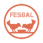
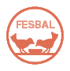
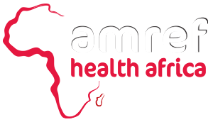
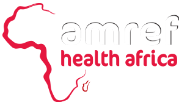

|
In the areas where people live far away from big businesses like plantations, they earn for a living by being farmers in farms that produce just enough for them and their families. In theory this should be a normal life, but the problem is that people fight against each other to steal their animals. This happens because population grows and the animal polulation does not keep up. When people try to defend their plantations and properties they often get hurted and unabled to do their jobs. This produces that a big part of the population can’t help anymore to the social economy and drags it to poverty. Furthermore, europe is not helping at all. Africa is the richest country in the world when it comes to raw materials such as gold or coltan, but the other countries buy it under its real price so they can get even richer. This international When did you decided to leave your country? It was a very delicate situation. It wasn’t in my home waiting to a bomb exploding, I was in the front line. I stopped doing the military service and abandoned Syria because I either killed or killed me. It is a civil war, Syrians against Syrians. It was not my place. Was it from one day to the next? The tension was lived for many years, already with the coup d'etat of Al Asad. In 2010 the checkpoints started, too much police in the street ... And I exploded. We Where is residing your family? My mother and maternal family had been living outside for years. My uncle came to work and study, he left the country during the armed conflict of 1983. My grandparents came to visit him, but because of my grandfather's illness they stayed here. My father is still in Syria because he and his family is involved in politics. There I also have an 11 year old sister and a stepbrother. How did your father's family feel about your escape? Pretty bad. For them, I deserted, and they had problems with the secret police and the military police. We have also clashed a lot about political issues: we think differently. They are with the government and I am not against only the regime, but against everything that is happening. Right now you can not be neutral, or you are from one side or from another. And everyone has their hands stained. As we, see refugees like Sami Shihadeh are trying to escape from this horrible situation and we are not giving them the opportunity of living as normal citizens. But Syrian refugees like him could even be more prepared than us to do, for example, politics, because they already know which things will lead to a bad political situation. Turkey government needs help to administer this difficult situation. In this contract EU offers economical help to end this problem with the only condition of it being spend on the humanitarian crisis. Everyone wishes that this cooperation lasts a long time, because it may be the solution to the biggest problem that the world is facing right now. You can find the complete document here This is not the first document of its kind. There have been other documents where a group of different countries accorded how many people were they going to let in, but most of them have disappeared in a big and useless bureaucracy. Hopefully this document isn't a one of a kind event and gets repeated more in the future. The last document of this kind was signed in 2015, and since then there have been no more guvernamental projects to try to fix this situation. This is the reason why we encourage people to petition There is a refugee camp in the north of turkey that is known to be the best one in the world but a journalist looking for information to make an article about this topic discovered that the living conditions of the refugees were not the apropiate at all. Even the kids were sleeping in tents at -5 grades celsius with just a thin jacket because that's the only resources that they had available. This journalist asked people about their stay in the camp. She was always told about how boring and The method most used by immigrants from Africa to reach Europe are the boats, small boats that rent in their country of origin and are used by hundreds of immigrants at the same time, this boats are not A clear example of this situation occurred last month, when a boat that had 400 immigrants sank in the Mediterranean leaving 280 dead, of which 70 were children. So to avoid this situation we should help them before they have to use this radical methods that can lead to their death. https://scratch.mit.edu/projects/227336591/ |
|

 

 

Follow us on Instagram: @HelpRefugeesHBST
Or leave a comment here: